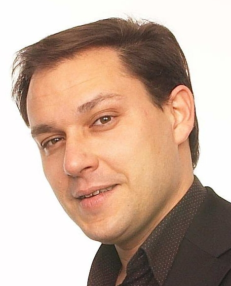

Albert Germon, Directeur
Albert Gémon est spécialiste en système embarqué.
Diplômé de la haute école ENT et fort d'une expérience de 15 ans dans le domaine de la navigation en régate il fonde la société EICAL en 2011 dont il est le gérant. Il intervient sur la partie R&D et sur la relation client
Sophie Maléou, Ingénieur d'étude
Sophie Maléou, diplomée de l'ENIB intègre la société Eical en 2012 après plusieurs expériences à l'étranger des diverses écuries courses. Elle est en charge de la partie conception de systèmes.
Pierre Lahot, Secrétariat & Relation Client
Pierre Lahot, est en charge du suivi de projet auprès de nos clients. Son attachement à la voile de compétition est son meilleur atout pour l'accompagnement de nos projets.
Virginie Delo, Technicienne
Virginie Delo est Technicienne système. Elle cumule à la fois un parcours technique et sportif en tant que skippeuse sur de nombreuses courses au large.
Created with Admarket's flickrSLiDR.